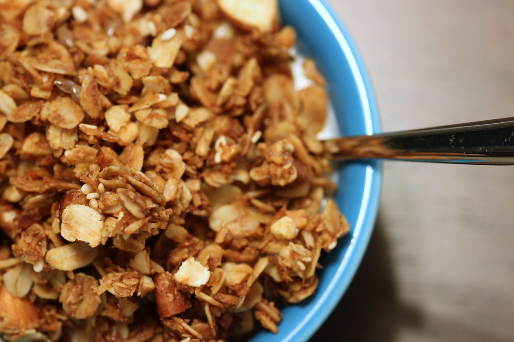

Homemade Granola

Description
Homemade Granola - A fibre rich, energy boosting breakfast thats sure to have you feeling good.
Recipe servings: 15
Ingredients
- 2 tbsp vegetable oil
- 125ml maple syrup
- 2 tbsp honey
- 1 tsp vanilla extract
- 300g rolled oats
- 50g sunflower seed
- 4 tbsp sesame seeds
- 50g pumpkin seeds
- 100g flaked almond
- 100g dried berries
- 50g coconut flakes or desicated coconut
Method
- Heat oven to 150C/fan 130C/gas 2. Mix the oil, maple syrup, honey and vanilla in a large bowl. Tip in all the remaining ingredients, except the dried fruit and coconut, and mix well.
- Tip the granola onto two baking sheets and spread evenly. Bake for 15 mins, then mix in the coconut and dried fruit, and bake for 10-15 mins more. Remove and scrape onto a flat tray to cool. Serve with cold milk or yogurt. The granola can be stored in an airtight container for up to a month.
- Eat as is or add to yogurt
See our other breakfast recipes
here.